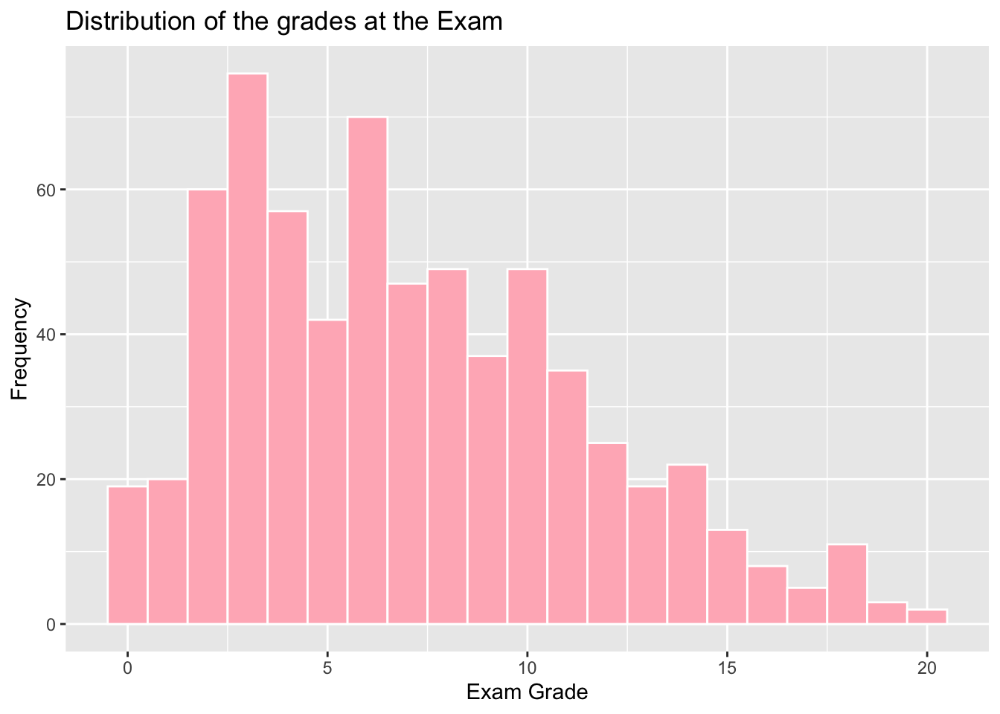
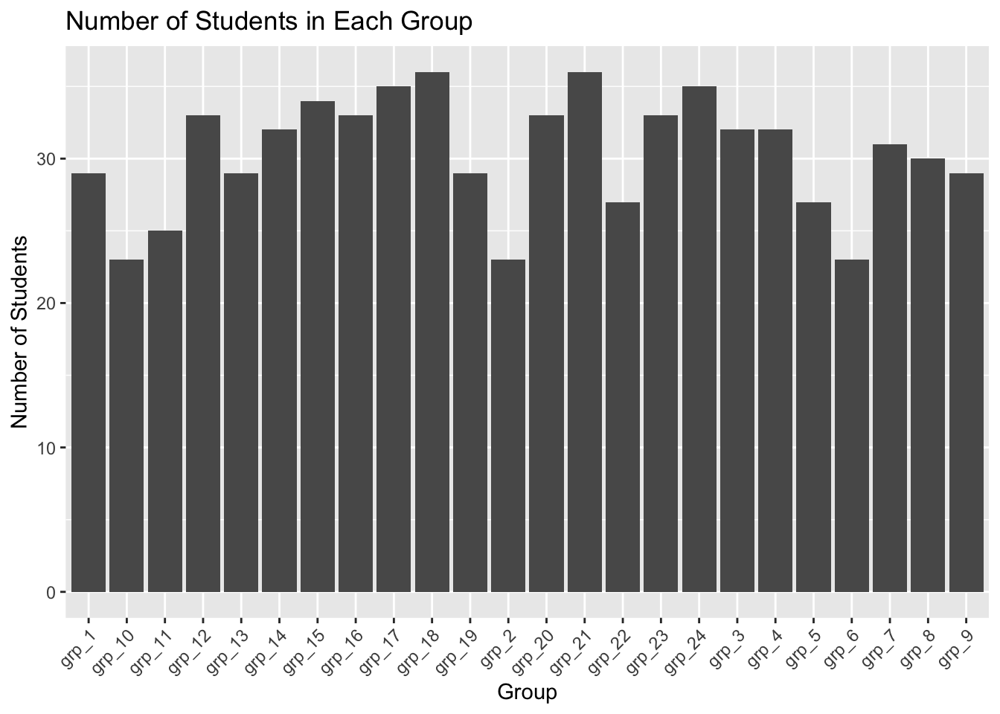
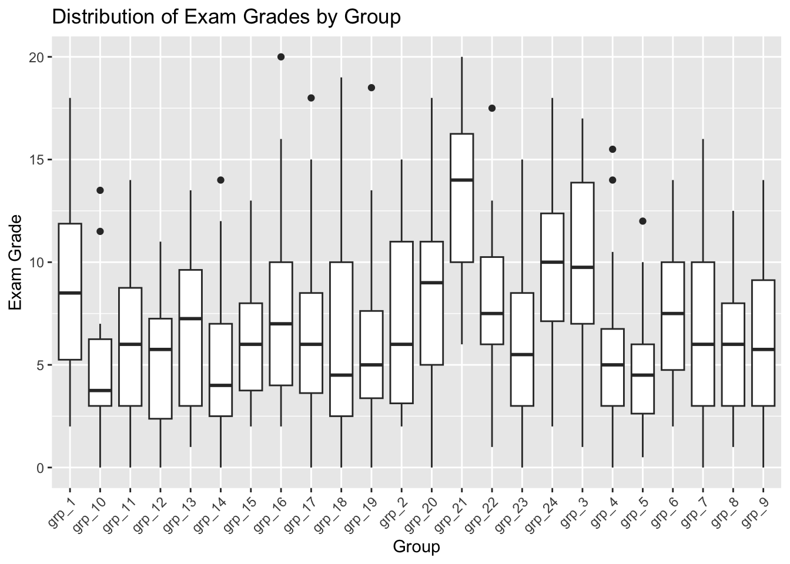
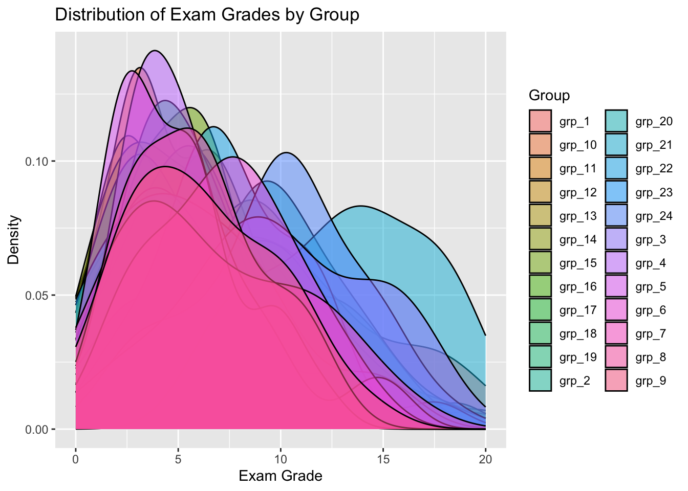
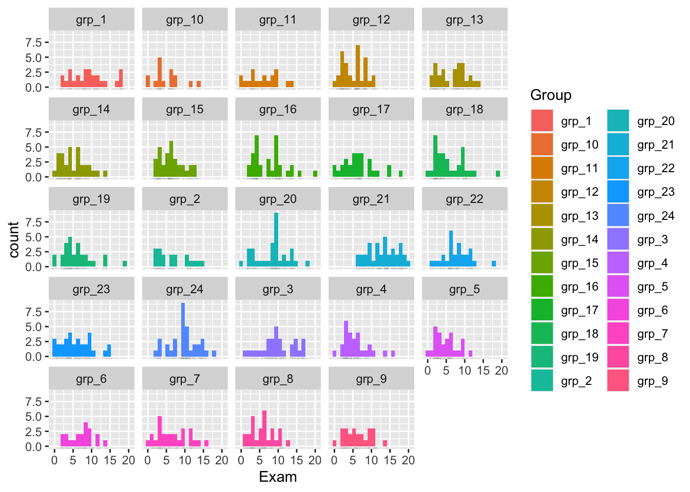
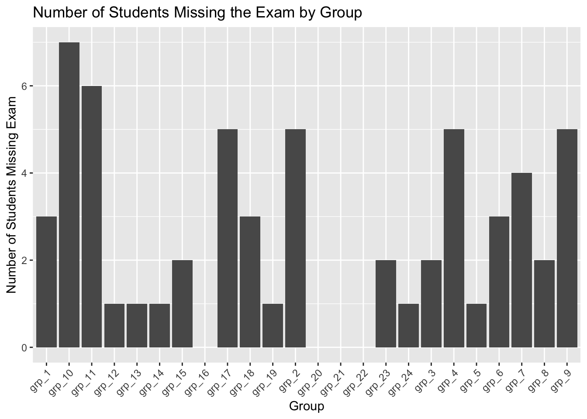
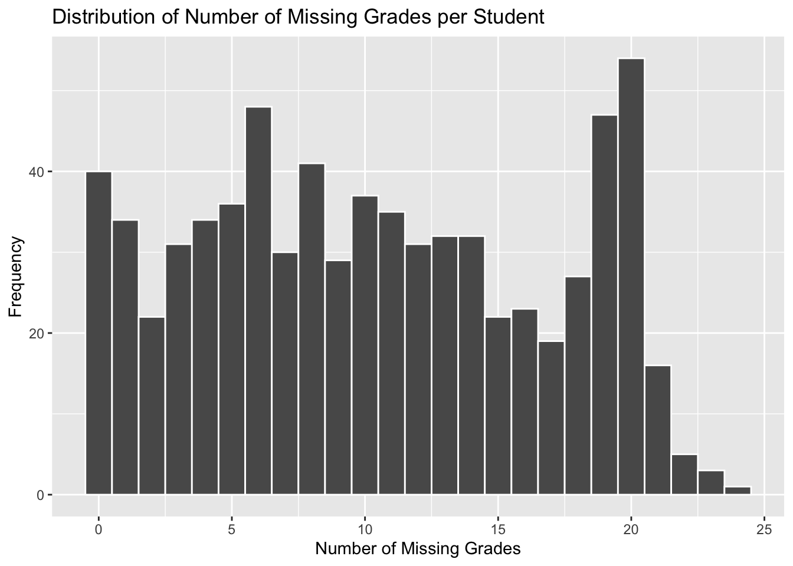
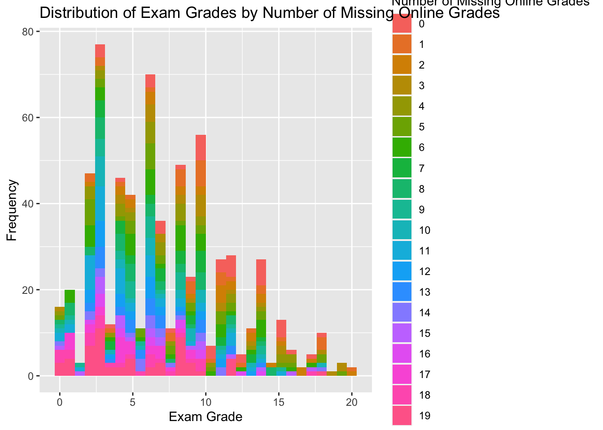
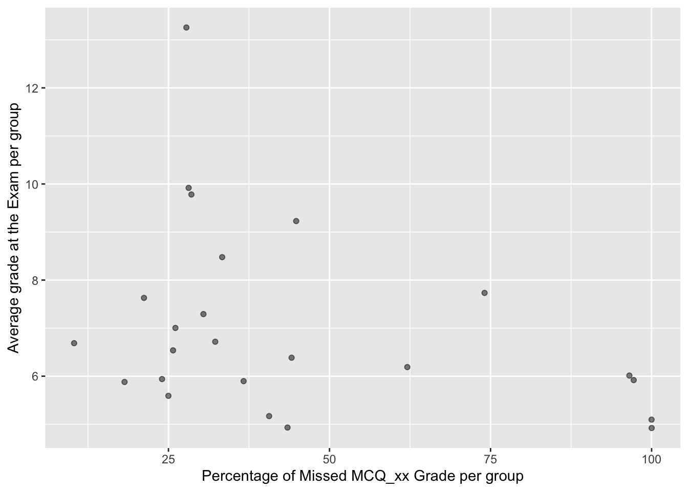

Code
here::i_am("r-101-grade-analysis.Rproj")
library(here)
library(dplyr)
library(tidyr)
library(ggplot2)
library(vroom)
library(stringr)here::i_am("r-101-grade-analysis.Rproj")
library(here)
library(dplyr)
library(tidyr)
library(ggplot2)
library(vroom)
library(stringr)Download of the data contained in the local file
grades <- vroom(here("grades.csv"))| Minimum | Maximum | Median | Mean |
|---|---|---|---|
| 0 | 20 | 6.5 | 7.148729 |
The minimum grade is 0, the maximum grade is 20. The median is 6,5 - which means that half of the students had a grade above 6,5 and half of the students had a grade below 6,5. The mean of the grades is 7,15. We notice that the mean and the median are quite different, especially because the mean is influenced by high grades.
students_without_exam <- grades |>
count(is.na(Exam))There are 60 students who didn’t take the Exam.
grades_NA <- grades |>
filter(!is.na(Exam))
grades_distribution <- ggplot(grades_NA, aes(x = Exam)) +
geom_histogram(binwidth = 1, fill = "lightpink", color = "white") +
xlab("Exam Grade") + ylab("Frequency") +
labs(title = "Distribution of the grades at the Exam")
grades_distribution
We notice that the largest frequency of grades is 3 (around 75 people had 3 at the exam). We can also notice that a large proportion of students had under 10. Overall, the results at this exam are quite bad.
students_per_group <- grades |>
group_by(Group) |>
summarize(Num_Students = n())
students_per_group |>
knitr::kable()| Group | Num_Students |
|---|---|
| grp_1 | 29 |
| grp_10 | 23 |
| grp_11 | 25 |
| grp_12 | 33 |
| grp_13 | 29 |
| grp_14 | 32 |
| grp_15 | 34 |
| grp_16 | 33 |
| grp_17 | 35 |
| grp_18 | 36 |
| grp_19 | 29 |
| grp_2 | 23 |
| grp_20 | 33 |
| grp_21 | 36 |
| grp_22 | 27 |
| grp_23 | 33 |
| grp_24 | 35 |
| grp_3 | 32 |
| grp_4 | 32 |
| grp_5 | 27 |
| grp_6 | 23 |
| grp_7 | 31 |
| grp_8 | 30 |
| grp_9 | 29 |
The groups with the highest number of students are groups 18 and 21 (36 students) and the groups with the smallest number of students are groups 2 and 10 (23 students).
students_per_group_plot <-
ggplot(students_per_group, aes(x = Group, y = Num_Students)) +
geom_bar(stat="identity") +
labs(title = "Number of Students in Each Group", x = "Group", y = "Number of Students") + theme(axis.text.x = element_text(angle = 45, hjust = 1))
students_per_group_plot
We have the same conclusions : The groups with the highest number of students are groups 18 and 21 (36 students) and the groups with the smallest number of students are groups 2 and 10 (23 students). We have added “theme(axis.text.x = element_text(angle = 45, hjust = 1))” because the x axis was not unreadable.
exam_boxplot <- ggplot(grades, aes(x = Group, y = Exam)) +
geom_boxplot() +
labs(title = "Distribution of Exam Grades by Group", x = "Group", y = "Exam Grade") + theme(axis.text.x = element_text(angle = 45, hjust = 1))
exam_boxplot Warning: Removed 60 rows containing non-finite values (`stat_boxplot()`).
exam_density <- ggplot(grades, aes(x = Exam, fill = Group)) +
geom_density(alpha = 0.5) +
labs(title = "Distribution of Exam Grades by Group", x = "Exam Grade", y = "Density")
exam_densityWarning: Removed 60 rows containing non-finite values (`stat_density()`).
ggplot(grades, aes(x = Exam, fill = Group)) +
geom_histogram(bins = 20) +
geom_rug(alpha = 0.05, linewidth = 1.5) +
facet_wrap(~Group)Warning: Removed 60 rows containing non-finite values (`stat_bin()`).
According to me, the less readable graphic is the density graph because the distributions of all groups are overlapping. The histogram is more readable. We can easily see the distribution of the grades for each group. However, it is not very easy to compare. The boxplot is much more clearer to make comparisons between groups. We can easily notice that the group 21 have the best grades and that groups 4 and 5 have the worst grades, for instance. Also, according to me, we have a contradictory result because we also saw previously that the group 21 was one the group with the largest number of students and commonly, we know that the more students you have in a class, the less time you have for each student so the results can be lower, which is not the case in this precise case.
missed_exam_counts <- grades |>
group_by(Group) |>
summarise(MissedExamCount = sum(is.na(Exam)))
missed_exam_counts |>
knitr::kable()| Group | MissedExamCount |
|---|---|
| grp_1 | 3 |
| grp_10 | 7 |
| grp_11 | 6 |
| grp_12 | 1 |
| grp_13 | 1 |
| grp_14 | 1 |
| grp_15 | 2 |
| grp_16 | 0 |
| grp_17 | 5 |
| grp_18 | 3 |
| grp_19 | 1 |
| grp_2 | 5 |
| grp_20 | 0 |
| grp_21 | 0 |
| grp_22 | 0 |
| grp_23 | 2 |
| grp_24 | 1 |
| grp_3 | 2 |
| grp_4 | 5 |
| grp_5 | 1 |
| grp_6 | 3 |
| grp_7 | 4 |
| grp_8 | 2 |
| grp_9 | 5 |
The group with the largest number of students who have missed the exam is group 10. One of the group with the lowest number of students who have missed the exam is group 21, which is logical with our previous result (question 7)
missed_exam_counts_plot <-
ggplot(missed_exam_counts, aes(x = Group, y = MissedExamCount)) +
geom_col() +
labs(title = "Number of Students Missing the Exam by Group", x = "Group", y = "Number of Students Missing Exam") +
theme(axis.text.x = element_text(angle = 45, hjust = 1))
missed_exam_counts_plot
We obtain the same results : the group with the largest number of students who have missed the exam is group 10. One of the group with the lowest number of students who have missed the exam is group 21, which is logical with our previous result (question 7)
grades2 <- grades |>
pivot_longer(cols = Exam | starts_with("MCQ") | starts_with("Online_MCQ"),
names_to = "name",
values_to = "value")
head(grades2) #display first rows # A tibble: 6 × 4
Id Group name value
<dbl> <chr> <chr> <dbl>
1 561 grp_16 Exam 10
2 561 grp_16 MCQ_1 15
3 561 grp_16 MCQ_2 18.5
4 561 grp_16 MCQ_3 12.7
5 561 grp_16 MCQ_4 8.24
6 561 grp_16 MCQ_5 13.8 missing_grades_per_student <- grades2 |>
group_by(Id) |>
summarize(Num_Missing_Grades = sum(is.na(value)))
head(missing_grades_per_student)# A tibble: 6 × 2
Id Num_Missing_Grades
<dbl> <int>
1 1 10
2 2 15
3 3 6
4 4 0
5 5 19
6 6 1We have the number of missing grades in total for each student, characterized by their ID.
ggplot(missing_grades_per_student, aes(x = Num_Missing_Grades)) +
geom_histogram(binwidth = 1, color = "white") +
labs(title = "Distribution of Number of Missing Grades per Student", x = "Number of Missing Grades", y = "Frequency")
The largest frequency of number of missing grades is 20 (a large proportion of students have missed 20 grades)
exam_new_grades <- grades2 |> filter(str_starts(name, "Exam"))
missed_exam_counts2 <- exam_new_grades |> group_by(Group) |>
summarise(Num_Missing_Exam = sum(is.na(value)))
head(missed_exam_counts2)# A tibble: 6 × 2
Group Num_Missing_Exam
<chr> <int>
1 grp_1 3
2 grp_10 7
3 grp_11 6
4 grp_12 1
5 grp_13 1
6 grp_14 1missing_online_grades_per_student <- grades2|>
filter(str_starts(name, "Online_MCQ")) |>
group_by(Id) |>
summarize(missing_online_grades = sum(is.na(value)))
head(missing_online_grades_per_student)# A tibble: 6 × 2
Id missing_online_grades
<dbl> <int>
1 1 9
2 2 14
3 3 4
4 4 0
5 5 19
6 6 1grades_with_missing_online <- grades |>
rowwise() |>
mutate(na_online_grades = sum(is.na(c_across(starts_with("Online_MCQ")))))
head(grades_with_missing_online)# A tibble: 6 × 33
# Rowwise:
Id Group Exam MCQ_1 MCQ_2 MCQ_3 MCQ_4 MCQ_5 MCQ_6 MCQ_7 MCQ_8 MCQ_9 MCQ_10
<dbl> <chr> <dbl> <dbl> <dbl> <dbl> <dbl> <dbl> <dbl> <dbl> <dbl> <dbl> <dbl>
1 561 grp_… 10 15 18.5 12.7 8.24 13.8 20 20 20 20 17.8
2 321 grp_… 6 NA 10.8 2.73 5.88 4.62 12 6.67 0 2.5 4.44
3 153 grp_… 9 6.67 13.8 9.09 9.41 13.8 16 6.67 6.47 5 5.56
4 74 grp_7 6 11.7 16.9 18.2 11.8 12.3 16 11.1 10.6 5 11.1
5 228 grp_4 4 6.67 6.15 12.7 1.18 1.54 16 8.89 10.6 5 15.6
6 146 grp_… 10 3.33 16.9 18.2 5.88 20 20 11.1 12.9 15 6.67
# … with 20 more variables: Online_MCQ_1 <dbl>, Online_MCQ_2 <dbl>,
# Online_MCQ_3 <dbl>, Online_MCQ_4 <dbl>, Online_MCQ_5 <dbl>,
# Online_MCQ_6 <dbl>, Online_MCQ_7 <dbl>, Online_MCQ_8 <dbl>,
# Online_MCQ_9 <dbl>, Online_MCQ_10 <dbl>, Online_MCQ_11 <dbl>,
# Online_MCQ_12 <dbl>, Online_MCQ_13 <dbl>, Online_MCQ_14 <dbl>,
# Online_MCQ_15 <dbl>, Online_MCQ_16 <dbl>, Online_MCQ_17 <dbl>,
# Online_MCQ_18 <dbl>, Online_MCQ_19 <dbl>, na_online_grades <int>plot <- ggplot(grades_with_missing_online, aes(x = Exam, fill = factor(na_online_grades))) +
geom_histogram() +
labs(title = "Distribution of Exam Grades by Number of Missing Online Grades", x = "Exam Grade", y = "Frequency",
fill = "Number of Missing Online Grades")
plot`stat_bin()` using `bins = 30`. Pick better value with `binwidth`.Warning: Removed 60 rows containing non-finite values (`stat_bin()`).
We can quite easily see that the number of missing online grades is correlated with the exam grade. In fact, we can see that among exam grades, the number of missing online exam is high. For instance, among O exam grade, there is a large number of 18 or 17 missing online grades and a low number of 1 or 2 missing online exams.
mcq_missed_per_student <- grades |>
group_by(Id) |>
mutate(Missed = any(is.na(c_across(starts_with("MCQ"))))) |>
distinct(Id, .keep_all = TRUE) |>
select(Id, Missed)
knitr::kable(head(mcq_missed_per_student))| Id | Missed |
|---|---|
| 561 | FALSE |
| 321 | TRUE |
| 153 | FALSE |
| 74 | FALSE |
| 228 | FALSE |
| 146 | FALSE |
group_missed_percentage <- grades |>
group_by(Group, Id) |>
summarize(Missed = any(is.na(c_across(starts_with("MCQ"))))) |>
group_by(Group) |>
summarize(P_missed = mean(Missed) * 100)`summarise()` has grouped output by 'Group'. You can override using the
`.groups` argument.knitr::kable(group_missed_percentage)| Group | P_missed |
|---|---|
| grp_1 | 44.82759 |
| grp_10 | 43.47826 |
| grp_11 | 24.00000 |
| grp_12 | 100.00000 |
| grp_13 | 10.34483 |
| grp_14 | 40.62500 |
| grp_15 | 44.11765 |
| grp_16 | 21.21212 |
| grp_17 | 25.71429 |
| grp_18 | 97.22222 |
| grp_19 | 96.55172 |
| grp_2 | 26.08696 |
| grp_20 | 33.33333 |
| grp_21 | 27.77778 |
| grp_22 | 74.07407 |
| grp_23 | 18.18182 |
| grp_24 | 28.57143 |
| grp_3 | 28.12500 |
| grp_4 | 25.00000 |
| grp_5 | 100.00000 |
| grp_6 | 30.43478 |
| grp_7 | 32.25806 |
| grp_8 | 36.66667 |
| grp_9 | 62.06897 |
For instance, in group 12, it means that every student of this group have missed at least once a grade MCQ_xx
average_exam_grade <- grades |>
group_by(Group) |>
summarize(Average_Exam_Grade = mean(Exam, na.rm = TRUE))
merged_data <- inner_join(group_missed_percentage, average_exam_grade, by = "Group")
graph <- ggplot(merged_data, aes(x = P_missed, y = Average_Exam_Grade)) +
geom_jitter(alpha = 0.5, width = 0.01, height = 0.01) +
labs(x = "Percentage of Missed MCQ_xx Grade per group",
y = "Average grade at the Exam per group",
size = "Average grade at the Exam per group",
color = "Percentage of missed MCQ_xx grade per group") +
scale_color_viridis_c() +
scale_size_continuous()
graph
To conclude, students that have missed MCQ_xx Grade have in average lowest grade at the Exam.